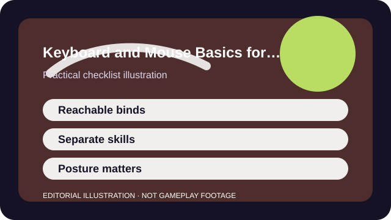

QUICK ANSWER
The short version
Simplify your keybinds, keep important actions reachable, and separate movement comfort from advanced mechanical ambitions until the basics feel natural.
Switching from controller to keyboard and mouse often feels harder than the internet admits. The problem is not only the extra keys. It is learning to split movement, camera control, and utility timing across different parts of the body at once.
The fastest way through that awkward phase is to reduce complexity. Reachable binds, calm mouse movement, and one consistent layout beat flashy advanced setups you cannot yet use under pressure.

CHECKLIST
What to confirm before you change anything
- Give yourself enough mouse space and a seat height that does not lock your wrist upward.
- Bind push-to-talk, ping, or map controls somewhere easy before team games begin.
- Keep the highest-frequency actions on easy keys rather than far reaches.
- Learn your reset keys for reload, interact, crouch, and inventory before adding extras.
- Save a screenshot of the initial layout so future experiments stay reversible.
The goal is to remove avoidable friction. If simple movement already feels awkward, adding fancy binds early only buries the real problem.
SCENARIO
When a controller player keeps mis-hitting abilities on PC
The first temptation is to search for a famous bind setup. That rarely works because the player has not yet learned which fingers naturally own which jobs. What looks optimal on paper may still feel impossible in a real match.
A calmer approach is to map only the actions you truly need, then practice moving, aiming, and one utility layer at a time. Once the base movement is automatic, extra binds become much easier to place intelligently.
PROCESS
A repeatable way to work through it
Make the default map smaller, not larger
Reduce duplicate or novelty binds until the core actions are obvious and easy to reach.
Train movement and camera separately at first
A few quiet minutes of strafing, cornering, and menuing teaches more than rushing into a complex fight.
Use secondary binds for awkward stretches
If an action is important but uncomfortable, a second accessible bind can be better than forcing a reach.
Add one advanced mechanic at a time
Jumping straight into every lean, grenade, ping, wheel, and gadget shortcut slows the whole transition.
After the layout feels stable, small refinements make sense. Before that, consistency matters more than theoretical optimization.
COMMON MISTAKES
What usually makes the problem worse
Copying esports binds verbatim
A competitive setup built around years of habit may be actively unhelpful for a new PC player.
Putting too many actions on stretch keys
If your hand has to search or strain, the bind is not actually efficient.
Practicing while your posture is bad
A cramped seat or tiny mouse space can make the entire transition feel harder than it really is.
SUCCESS CRITERIA
How to know the change actually worked
- You can move, look around, and use the most important action keys without conscious search.
- Misinputs become rare enough that match mistakes feel understandable.
- The layout still feels usable after fatigue, not only in the first five minutes.
- You know which one or two advanced binds would be worth improving next.
The keyboard-and-mouse transition starts paying off when the inputs stop feeling like separate tasks. You do not need perfection. You need a baseline that no longer argues with you.
SOURCES AND LIMITS
Where to verify live details
- Keyboard size, hand size, and desk space change what counts as a reachable bind map.
- Different genres reward very different priorities for crouch, abilities, inventory, and map keys.
- Physical discomfort should be solved before you judge your potential on the input method itself.
Menu names, defaults, and device behavior can change after updates. Use the linked official support surfaces for the current live details and keep this guide for the process around them.